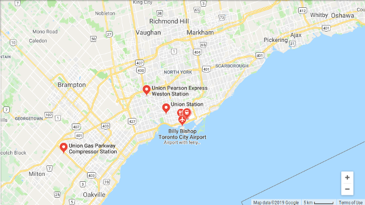

Login
Sign Up
Login
Sign Up
Transit Rating
Log In
Log Out
Register
Search Transit Systems
Submit Transit System
Close
Log In
Log Out
Register
Search Transit Systems
Submit Transit System
Log In
×
Username:
Password:
Go
Search Results
#
Rating
Name
Type
City
Province
Temp Link
1
0/5
TTC Subway
Subway
Toronto
ON
individual sample
2
0/5
TTC Street Cars
Tram
Toronto
ON
individual sample
3
3/5
HSR
Bus
Hamilton
ON
individual sample
